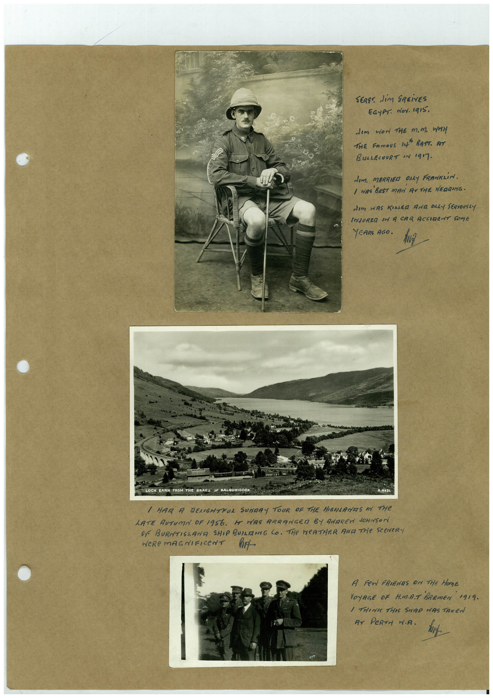

Book 1 · scan 085


Description
Transcription
Context
Review notes
Compare the machine draft with the scan. Handwriting and names need human review.
Artifacts
Edit the artifacts field in this note’s frontmatter to change these records. This summary is generated.
B01-S085-A01 — Photo & Handwritten note — Book 1, scan 085
Types: Photo, Handwritten note
Scope: Whole scanned page; individual items can be split out during review.
Caption: Not mapped yet.
Caption source: Not recorded yet.
Caption status: unmapped
Machine transcription
SERS" JiM SREivES EGyPT. doy. Igi5. Jem wor THE M.M. WH THE FAmoUS 14" BATT. AT BULLECOURT IN 1917. dIm. MARRIED ONLY FRANKLiN. 1 WIRE BEST MAN RITHE NEGRING. dim WAS KIALEG AND ONLY SERIOUSLY INJURED IN A CAR ACCIRENT SOME YEARS AGO. OCH EARN FROM THE BRAES SP BALOUHIDDER / HAR A DENGHTRUL SUNDRY TOUR OF THE HIGHLANES IN THE LATE AUTUMN OF 1956. HE HAS ARRANGED BY ANAREN dONNSON OR BURTISLAND SHIP BUILEING CO. THe WeATHER AND THe SCeNeR WeRe mAGNIFICeNT A Fer FRIENDS ON THE HONE VOYRGE OF H.MA.T BREmEN 1919. / THINKY THIS SNAP WAS TAKEN AT PERTH W.A.